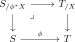
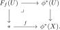
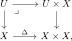
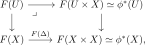

Recall that a continuous map \(f\colon X \to Y\) of topological spaces is called étale if it is a local homeomorphism: every point \(x \in X\) admits an open neighborhood \(U\) such that the composite \(U \hookrightarrow X \xrightarrow{f} Y\) is an open embedding. The topos-theoretic analogue is obtained from the projection \(T_{/X}\to T\) associated to an object \(X\) of a topos \(T\). We first recognize these morphisms by the existence of a conservative further left adjoint satisfying a projection formula. We then classify the étale morphisms over a fixed topos and record their compatibility with base change.
A morphism of logoi \(\phi^*\colon T \to S\) is called étale if there exists an object \(X \in T\) and an equivalence of logoi \(S \simeq T_{/X}\) such that the composite
\[T \xrightarrow{\phi^*} S \simeq T_{/X}\]
is the functor \(U \mapsto U \times X\). A morphism \(\phi_*\colon S \to T\) of topoi is étale if the corresponding morphism \(\phi^*\colon T \to S\) is étale. We denote by
As we will see below in Example 6.22, every continuous map of topological spaces \(f\colon X \to Y\) gives rise to a morphism of topoi \(f_*\colon \Shv(X) \to \Shv(Y)\) between their sheaf categories. One can show that \(f\) is an étale morphism of topological spaces (that is, a local homeomorphism) if and only if \(f_*\) is an étale morphism of topoi, justifying the terminology.
For an étale morphism \(\phi^*\), its further left adjoint is commonly denoted \(\phi_!\). We instead write \(\phi_{\sharp}\), in order to distinguish this adjoint from the lower shriek in a six-functor formalism.
A morphism of logoi \(\phi^*\colon T \to T'\) is étale if and only if:
The functor \(\phi^*\) admits a left adjoint \(\phi_{\sharp}\).
The functor \(\phi_{\sharp}\) is conservative.
For every morphism \(X\to Y\) in \(T\) and every morphism \(Z\to\phi^*Y\) in \(T'\), the canonical map
\[\phi_{\sharp}\bigl(\phi^*X \times_{\phi^*Y} Z\bigr) \longrightarrow X \times_Y \phi_{\sharp}(Z)\]
is an isomorphism.
Proof
If \(\phi^*\) is étale, choose \(A\in T\) and an identification \(T'\simeq T_{/A}\) under which \(\phi^*\) is the functor \(U\mapsto U\times A\). Its left adjoint \(\phi_{\sharp}\) is the forgetful functor \(T_{/A}\to T\). It is conservative, and the projection formula follows by composing pullback squares in \(T\).Conversely, suppose that \(\phi^*\) admits a conservative left adjoint \(\phi_{\sharp}\) satisfying the projection formula, and set \(A:=\phi_{\sharp}(*)\). Consider the functor
\[F\colon T' \longrightarrow T_{/A}, \qquad W \longmapsto \bigl(\phi_{\sharp}(W)\to A\bigr).\]
It admits a right adjoint
\[G(Y\to A):=\phi^*(Y)\times_{\phi^*A}*.\]
For \(Y\to A\), the projection formula identifies the underlying morphism of the counit \(FG(Y)\to Y\) with an isomorphism, so the counit is an isomorphism in \(T_{/A}\). Let \(W\to GFW\) be the unit. By the triangle identity, its image under \(F\) is an isomorphism because the counit is. In particular, \(\phi_{\sharp}\) sends the unit to an isomorphism. Since \(\phi_{\sharp}\) is conservative, the unit itself is an isomorphism. Thus \(F\) is an equivalence. Under this equivalence, \(\phi^*\) sends \(Y\) to the projection \(Y\times A\to A\), as required.
\[T \;\simeq\; \Topos^{\et}_{/T}, \qquad X \longmapsto T_{/X}.\]
In particular, \(\Topos^{\et}_{/T}\) is a \(1\)-category.
For every morphism of topoi \(\phi\colon S \to T\) and every \(X \in T\), the square

is a pullback in \(\Topos\). In particular, the category \(\Topos^{\et}\) admits pullbacks, and the inclusion \(\Topos^{\et} \hookrightarrow \Topos\) preserves pullbacks.
Proof
Given a morphism of topoi \(\phi\colon S \to T\) and an object \(X \in T\), we claim there is a natural equivalence
This immediately gives (2), and it gives (1) by taking \(S = T_{/Y}\) and noticing that \(\Hom_{T_{/Y}}(Y,X \times Y) \simeq \Hom_T(Y,X)\).To prove the claim, we will start by producing a natural equivalence
induced by the diagonal \(\Delta\colon X \to X \times X\), viewed as a morphism in \(T_{/X}\). Since \((X,\id_X)\) is terminal in \(T_{/X}\), we have \(F(X) \simeq *\). Moreover, because \(F\) is a functor under \(T\), we identify \(F(X \times X)\) with \(\phi^*X\). So \(f_F\) is a point in \(\Hom_S(*,\phi^*X)\).
Conversely, given a morphism \(f\colon * \to \phi^*X\), define \(F_f\colon T_{/X} \to S\) by sending \(U \to X\) to the pullback

The functor \(F_f\) preserves finite limits because it is the composite of \(\phi^*\colon T_{/X}\to S_{/\phi^*X}\) with pullback along \(f\). It also preserves colimits: the first functor does so objectwise, while the second does so by descent in \(S\). When \(U=X\times Y\) for some \(Y\in T\), we have \(F_f(U)\simeq\phi^*(Y)\), showing that \(F_f\) is a functor under \(T\).
Now, applying \(F_{f}\) to the diagonal map \(\Delta\colon X \to X \times X\) reproduces the original map \(f\). Conversely, given any left exact functor \(F\colon T_{/X} \to S\) under \(T\) and any \(U \in T_{/X}\), we may always write \(U\) as the pullback in \(T_{/X}\) of the diagram

and thus we get a pullback square

showing that \(F\) is naturally equivalent to \(F_{f_F}\). This constructs the equivalence \(\Fun^{\lex}_{T/}(T_{/X}, S) \simeq \Hom_S(*,\phi^*X)\). The preceding description of \(F_f\) also shows that every such left exact functor preserves colimits. Hence the forgetful functor
By part (2) of the proposition, étale morphisms are closed under base change in \(\Topos\). In particular, given a morphism of topoi \(\phi\colon S \to T\), pullback along \(\phi\) defines a functor \(\phi^*\colon \Topos^{\et}_{/T} \to \Topos^{\et}_{/S}\).
The functor \(\Topos\catop \to \widehat{\Cat}, T \mapsto \Topos^{\et}_{/T}\) is equivalent to the composite \(\Topos\catop \simeq \Logos \hookrightarrow \Cat \hookrightarrow \widehat{\Cat}\).
and \(T\to\Topos^{\et}_{/T}\), \(X\mapsto T_{/X}\). The classification in Proposition 4.38 supplies inverse equivalences. These equivalences are natural in \(T\): for a pullback square we have a canonical isomorphism \(\psi^*\phi_{\sharp}(*) \simeq \phi'_{\sharp}(*)\). These base-change isomorphisms are compatible with pasting, since both sides classify the same iterated pullback of the étale morphism \(\phi\). Thus the objectwise equivalences assemble into the asserted equivalence of functors.
Consider morphisms of topoi \(T \xrightarrow{\phi} T' \xrightarrow{\psi} S\). If \(\psi\) and \(\psi\phi\) are étale morphisms, then so is \(\phi\).
Proof
Choose equivalences \(T\simeq S_{/X}\) and \(T'\simeq S_{/Y}\) identifying \(\psi\phi\) and \(\psi\) with the slice projections. By Proposition 4.38, the morphism \(\phi\) over \(S\) is classified by a morphism \(f\colon X\to Y\). Regarding \(f\) as an object of \(S_{/Y}\simeq T'\), there is an equivalence